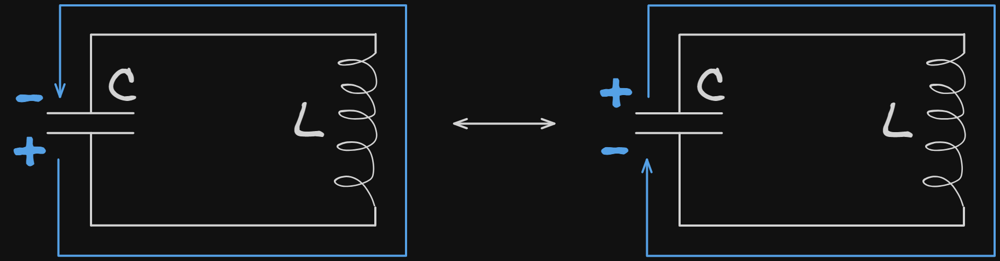

Связанные темы
Колебательный контур ― это электрическая цепь, содержащая катушку индуктивности и конденсатор. В такой электрической цепи происходят колебания электрического тока и напряжения, и взаимная трансформация энергии электрического поля и энергии магнитного поля.
Процессы в колебательном контуре
У заряженного конденсатора на одной пластине находится определенное количество отрицательного заряда, а на другой ― положительного. Поскольку между пластинами конденсатора расположен диэлектрик (или воздух, и пластины не соприкасаются) ― заряд не может прямо перейти из одной пластины на другую. Но как только такой конденсатор оказывается подключенным к проводящей цепи, один конец которой связан с одной пластиной ― а другой с другой, заряды начинают переходить от пластины к пластине по «длинному пути» ― через всю цепь. Постепенно конденсатор разряжается ― теряет заряд, а в цепи наблюдается ток, ведь ток ― это направленные движения зарядов.
Если в цепи, кроме проводов и резисторов, находится катушка индуктивности, в равномерный и быстрый процесс перераспределения заряда вмешивается ЭДС самоиндукции катушки. Согласно правилу Ленца, втекающий в катушку ток вызывает ЭДС самоиндукции ― а ЭДС самоиндукции создает индуцированный ток, направленный так, чтобы препятствовать изменению тока в цепи. Если ток в цепи вдруг резко увеличивается ― индукционный ток стремиться его уменьшить, если ток в сети вдруг уменьшается ― индукционный ток стремиться его увеличивать.
Поэтому из – за катушки индуктивности заряд не переходит сразу через всю цепь, от одной обкладки конденсатора к другой. Сила тока в цепи медленно увеличивается ― потому что ее быстрому росту препятствует ЭДС самоиндукции катушки. Максимальной сила тока становится в тот момент, когда конденсатор разряжен (обе его обкладки обладают нулевым зарядом). В этот момент сила тока максимальна благодаря тому, что как только ее перестает наращивать конденсатор за счет потерянных зарядов ― ЭДС самоиндукции прекращает ей препятствовать.
Но разряженный конденсатор больше не может поддерживать силу току ― ведь заряда на его обкладках нет, и не будь в цепи катушки индукции, ток бы прекратился. Однако здесь вновь срабатывает правило Ленца: после того как сила тока достигла максимума и начала уменьшаться ― в катушке возникает ЭДС и индукционные токи, которые стремятся вернуть силу тока такой, как она была ― максимальной. Поэтому, даже после того, как конденсатор разряжен, в цепи продолжает течь ток. Заряды попадают на обкладку конденсатора и постепенно заряжают ее. На этот раз, та обкладка конденсатора, которая была заряжена положительно и принимала заряд, начинает накапливать отрицательный заряд, а так обкладка, которая была заряжена отрицательно, становится заряженной положительно.
После того как конденсатор зарядиться ― он вновь начинает разряжаться. Таким образом, в контуре происходят колебания заряда, силы тока, напряжения и энергий магнитного и электрического поля в катушке индуктивности и конденсаторе.

Цикл процессов, происходящих в колебательном контуре:
-
Начальное состояние ― конденсатор заряжен до максимального заряда Qm, но силы тока в цепи пока нет.
-
Конденсатор разряжается ― заряд переходит от одной обкладки на другую через всю цепь, сила тока в цепи постепенно увеличивается.
-
Конденсатор разряжен ― весь заряд с обкладок уже ушел, сила тока в цепи максимальна и равна Im.
-
Конденсатор заряжается ― сила тока в цепи уменьшается, а конденсатор получает заряд.
-
Конденсатор перезаряжен ― но теперь та обкладка, которая была положительно заряженной, стала отрицательно заряженной, и наоборот. Тока в цепи нет.
-
Конденсатор вновь разряжается, но в обратную сторону ― и ток течет в сторону, обратную тому, что был на этапе 2.
-
Конденсатор разряжен ― ток достиг максимума, а заряда на конденсаторе нет.
Для постоянного тока сила тока определялась как количество заряда, прошедшее через сечение проводника за некоторый промежуток времени:
Где:
― сила тока, А;
― количество заряда, Кл;
∆ ― время, с.
Но переменный ток изменяет в цепи свою величину и свое направление, поэтому силу переменного тока определяют, как производную количества заряда по времени:
Где:
― сила тока, А; Imax = Qmax ‧ ω.
― количество заряда, Кл; Imax = Qmax ‧ ω.
― время, с.
Заряд в колебательном контуре изменяется по гармоническому закону:
Где:
― количество заряда, Кл;
max ― максимальный заряд (амплитуда колебаний заряда), Кл;
― циклическая частота колебаний рад/с;
0 ― начальная фаза колебаний, рад;
― время, с.
Следовательно, сила тока в контуре изменяется по
При этом Qmax ‧ ω ― максимальная сила тока в цепи:
Сила тока в цепи переменного тока равна:
, где
― максимальная сила тока в цепи, А;
― циклическая частота колебаний рад/с;
0― начальная фаза колебаний, рад;
― время, с.
Энергетические переходы
В колебательном контуре происходит трансформация энергии электрического поля в энергию магнитного поля.
Энергия электрического поля заряженного конденсатора равна:
Где:
We ― энергия электрического поля конденсатора, Дж;
― электроемкость конденсатора, Ф;
― напряжение на обкладках конденсатора, В;
― заряд на обкладках конденсатора, Кл.
Так как напряжение на обкладках конденсатора в цепи переменного тока величина переменная, то и энергия электрического поля конденсатора ― переменна.
Энергия электрического поля конденсатора всегда положительна.
Энергия магнитного поля индукционной катушки равна:
Где:
Wm ― энергия магнитного поля индукционной катушки, Дж;
― индуктивность катушки, Гн;
― сила тока, А.
Как видно из формулы, энергия магнитного поля катушка также всегда положительна ― вне зависимости от того, какое из направлений силы тока принято в качестве положительного, а какое ― в качестве отрицательно, сила тока, возведенная в квадрат, всегда будет положительной величиной.
Согласно закону сохранения энергии, полная энергия колебательного контура постоянна в любой момент времени:
― полная энергия свободных электромагнитных колебаний, = const, Дж;
Wm max ― максимальная энергия магнитного поля катушки индуктивности, Дж;
We max ― максимальная энергия электрического поля конденсатора, Дж;
Wm ― энергия магнитного поля катушки индуктивности, Дж;
We ― энергия электрического поля конденсатора, Дж;
Или:
Где:
― полная энергия свободных электромагнитных колебаний, = const, Дж;
― электроемкость конденсатора, Ф;
― напряжение на обкладках конденсатора в момент времени t, В;
Umax ― максимальное напряжение на обкладках конденсатора, В;
― индуктивность катушки, Гн;
― сила тока в катушке индуктивности в момент времени t, А;
Imax ― максимальная сила тока в катушке индуктивности, А.
Частота и период колебаний силы тока, заряда и напряжения в колебательном контуре определяется формулой Томпсона и зависят только от индуктивности катушки и электроемкости конденсатора. Частота и период гармонических колебаний в колебательном контуре равны:
и
Где:
― частота колебаний Гц;
Т ― период колебаний с;
― индуктивность катушки Гн;
― электроёмкость конденсатора Ф.
Период колебаний энергии электрического поля и энергии магнитного поля в 2 раза меньше, чем периоды колебаний напряжения и тока соответственно.